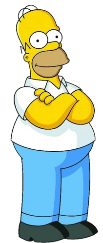

Simpson family

The Simpsons are the main protagonists of the TV show The Simpsons. The family first appeared on The Tracey Ullman Show, in the comedy short Good Night. The family has hundreds of relatives, including Mr. Burns and Patty and Selma.
Homer Simpson
Homer is one of the four best friends (Lenny, Carl, Moe), who call themselves "The Guys".
- “D'oh!”
- “Why you little...!”
- “Woo-hoo!”
Marge Simpson

Marjorie Jacqueline "Marge" Simpson (née Bouvier)[11] is the homemaker and matriarch of the Simpson family. She is also one of the five main characters in The Simpsons TV series. She and her husband Homer have three children: Bart, Lisa, and Maggie. Marge is the moralistic force in her family and often provides a grounding voice in the midst of her family's antics by trying to maintain order in the Simpson household. Aside from her duties at home, Marge has flirted briefly with a number of careers ranging from a police officer to an anti-violence activist.
- “Oh, Homie!”
- “It's true. Women aren't very good drivers.”
- “Now it's Marge's time to shine!”
Bart Simpson

“Bart is the dangerous eldest child of Homer and Marge. He is sometimes called El Barto.”
- “Ay Caramba!”
- “Eat my shorts!”
- “I didn't do it!”